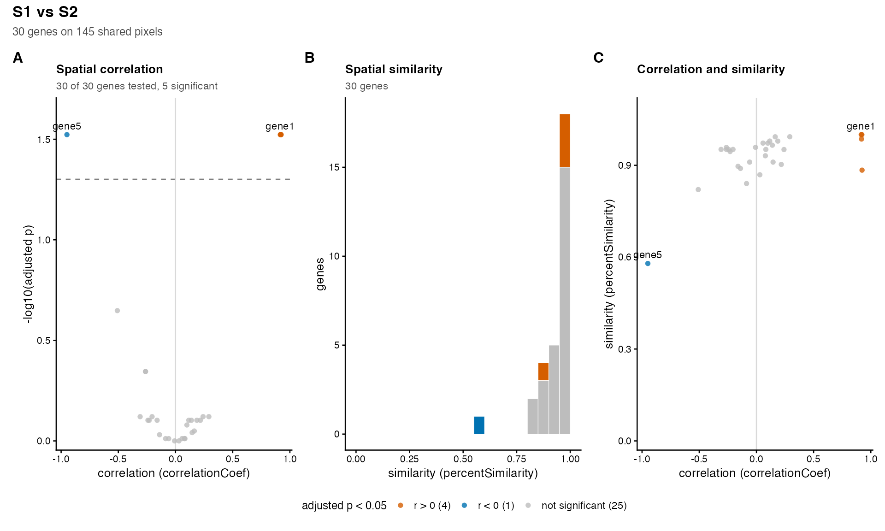
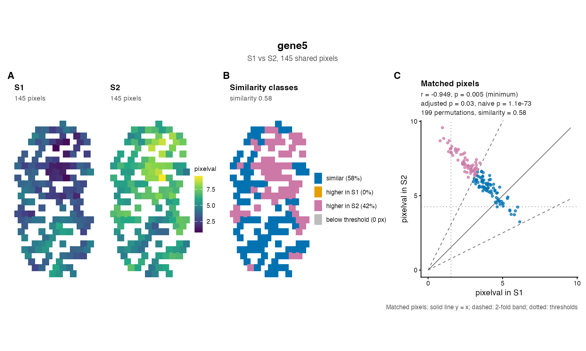

One figure for all the genes of a compareSpatial()
result: the correlation of every gene against its adjusted p-value, the
distribution of the similarity, and the correlation against the
similarity, with the significant genes coloured by the sign of their
correlation.
Arguments
- result
A
compareSpatial()result.- alpha
The threshold on
pValuePermuteAdjbelow which a gene is significant. Default 0.05.- label
Genes to label in the scatter plots. Default
NULL: none.- baseSize
The base font size in points, from which every text, the points and the legend are scaled. Default 10.
- ...
Passed to
patchwork::wrap_plots():ncol,nrow,widths,heights,design.
Value
A patchwork object (a ggplot2 figure of the panels, lettered, with
one legend), to print or to save with ggplot2::ggsave().
Details
The panels, each drawn when the result has its columns:
- A
correlationCoefagainst \(-\log_{10}\)(pValuePermuteAdj), with a dashed line atalpha. The genes at the top are those whose p-value reached the limit of the permutations (nPermutations): their p-values are not resolved below \(1 / (nPermutations + 1)\), so their heights are tied.- B
A histogram of
percentSimilarity(bins of 0.05 over 0 to 1), stacked by significance when the correlation was tested. Genes withNAsimilarity are not drawn; the subtitle counts them.- C
correlationCoefagainstpercentSimilarity.
A gene is significant when pValuePermuteAdj < alpha, and is
coloured by the sign of correlationCoef; the other genes
(including those skipped or failed) are grey. The genes named in
label are labelled in panels A and C, where their labels do not
overlap each other.
With the default baseSize = 10, ggplot2::ggsave(..., width
= 11, height = 4) suits the three panels; for a journal figure 180 mm
wide use baseSize = 7 and height = 70, units = "mm", and
for a single column of 90 mm baseSize = 6 with ncol = 1
(height = 180). The panels can be arranged with the arguments of
patchwork::wrap_plots() passed through ....
See also
plotGene() for the figure of one gene.
Examples
data(simRanPatternRasts)
# two samples of 30 simulated genes on the pixels shared by 60 of the rasters: 25
# pairs of independent patterns, four shared patterns (genes 1 to 4) and one
# opposite pattern (gene 5)
px <- Reduce(intersect, lapply(simRanPatternRasts[1:60], colnames))
values <- function(k) {
t(vapply(simRanPatternRasts[k], function(s) SummarizedExperiment::assay(s)[1, px],
numeric(length(px)))) - 6
}
make <- function(m) {
rownames(m) <- paste0("gene", seq_len(nrow(m)))
SpatialExperiment::SpatialExperiment(
assays = list(pixelval = m),
spatialCoords = SpatialExperiment::spatialCoords(simRanPatternRasts[[1]])[px, ])
}
x <- values(1:30)
y <- values(31:60)
y[1:4, ] <- x[1:4, ] + y[1:4, ] / 2
y[5, ] <- 8 - x[5, ] + y[5, ] / 2
res <- compareSpatial(list(S1 = make(x), S2 = make(y)), nPermutations = 199,
nThreads = 2)
#> compareSpatial: delta 0.01 dropped: with 145 shared pixels the smoothing window must hold at least 2 pixels (delta >= 0.0138)
#> compareSpatial: 30 genes on 145 shared pixels in 0.1 s (1807 permutations in total, 2 threads)
plotOverview(res, label = c("gene1", "gene5"))

plotGene(res, "gene5", make(x), make(y))
